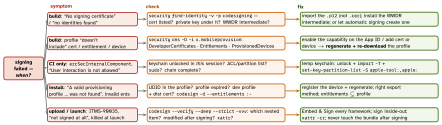

security-build · folio
In one line: Every signing error is a mismatch between four things that must agree — the identity (certificate + private key in a reachable keychain), the profile (App ID, certificates, entitlements, devices, expiry), the signed entitlements and the bundle (every nested binary signed, nothing changed after). First ask when it fails — build, CI only, install, upload, launch — then decode both sides and diff them instead of toggling Xcode settings.
Download PDF Print view LaTeX source


| Message (abridged) | Real cause | Fix |
|---|---|---|
| No signing certificate “Apple Distribution” found | identity not in a searched keychain, or the cert is there without its private key | import the .p12 from the Mac that made the CSR (or match); revoking + recreating breaks other machines |
Provisioning profile “X” doesn’t include the aps-environment entitlement | capability in .entitlements but not enabled on the App ID, or the profile predates it | enable on the App ID → regenerate profile → download (automatic signing does all three) |
| … doesn’t include signing certificate “Apple Development: Alice (…)” | profile lists other certs (new Mac, cert renewed) | regenerate the profile with your cert selected |
| profile / cert from another team | DEVELOPMENT_TEAM ≠ profile’s TeamIdentifier (often an extension target) | one team per target set; check every target |
| certificate expired or revoked | 1-year Development/Distribution cert ran out, or a teammate revoked it | new cert → new profiles; App Store builds already live are unaffected |
| A valid provisioning profile for this executable was not found | at install: expired profile, device missing, or profile/cert mismatch | decode embedded.mobileprovision inside the .ipa and compare |
| resource fork, Finder information, or similar detritus not allowed | extended attributes on files in the bundle (iCloud Drive / Dropbox folder, downloaded assets) | xattr -cr App.app, build outside synced folders |
code object is not signed at all — In subcomponent: …/Frameworks/X.framework | nested binary unsigned: “Embed Without Signing”, a Mach-O in Resources/, a patched vendor binary | Embed & Sign; put code where code goes; re-sign inside-out |
| ITMS-90035 Invalid Signature | dev/ad hoc identity, sealed resource missing/invalid, odd filenames, script files in the bundle | distribution identity, Release config, clean build, rename files |
| ITMS-90164 / ITMS-90046 | signed entitlements not all in the profile / not valid on iOS (wildcard associated domain, malformed application-identifier) | diff codesign -d --entitlements vs the profile; explicit values only |
| unsupported architectures [x86_64, i386] (ITMS-90087(unverified)) | simulator slices in a fat vendor framework | ship an .xcframework, or strip before signing |
Example — decode both sides and diff
unzip -q App.ipa && APP=Payload/App.app
security cms -D -i $APP/embedded.mobileprovision > prof.plist
/usr/libexec/PlistBuddy -c 'Print :Entitlements' prof.plist # allowed
/usr/libexec/PlistBuddy -c 'Print :ProvisionedDevices' prof.plist
codesign -d --entitlements :- $APP # actually signed
codesign -dvvv $APP 2>&1 | grep -E 'Authority|TeamIdentifier'
security find-identity -v -p codesigning # SHA-1 of your certs
xcodebuild -showBuildSettings | grep -E 'CODE_SIGN|PROVISIONING|TEAM'
codesign --verify --deep --strict -vvv $APP # nested damageWhere things live
- Profiles: Xcode 16+
~/Library/Developer/Xcode/UserData/Provisioning Profiles; Xcode ≤ 15~/Library/MobileDevice/Provisioning Profiles— tools and CI scripts hard-coding the old path need updating. - In the product:
embedded.mobileprovision(iOS),embedded.provisionprofile(macOS). Keys:TeamIdentifier,Entitlements,DeveloperCertificates,ProvisionedDevices,ExpirationDate.
Automatic vs manual signing
- Automatic (
CODE_SIGN_STYLE = Automatic): Xcode creates certs, App IDs, “Xcode Managed” profiles, registers the connected device. On CI:xcodebuild -allowProvisioningUpdates+ an App Store Connect API key (-authenticationKey{Path,ID,IssuerID}). - Manual:
CODE_SIGN_IDENTITY+PROVISIONING_PROFILE_SPECIFIERper target; deterministic — usual on CI with match. - Every target signs separately: each app extension / watch app has its own App ID and profile; the host’s profile does not cover them.
On the device
- iOS 16+: development-signed apps need Developer Mode (Settings › Privacy & Security); TestFlight / App Store builds don’t.
- Enterprise builds: the user must trust the developer (Settings › General › VPN & Device Management) and the first launch verifies online(unverified).
- No debugger on a distribution build: no
get-task-allow.
Traps
- “Revoke and recreate the certificate” — kills every other machine’s key and CI; export the
.p12instead. - Capability works in Debug, fails in Release: only the development profile was regenerated.
- Toggling “Automatically manage signing” hides the real mismatch — diff first.
- Anything that edits the bundle after signing (a script phase,
strip,install_name_tool) invalidates it — sign last.